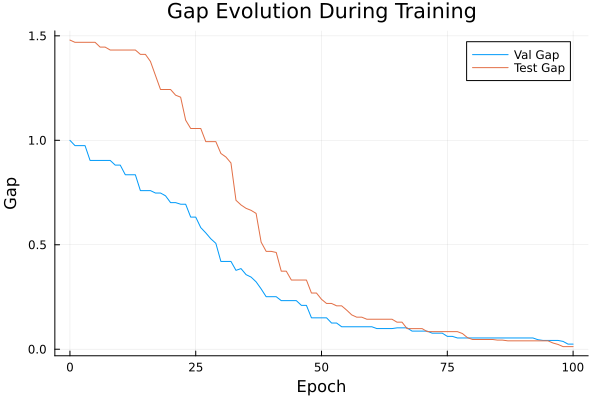
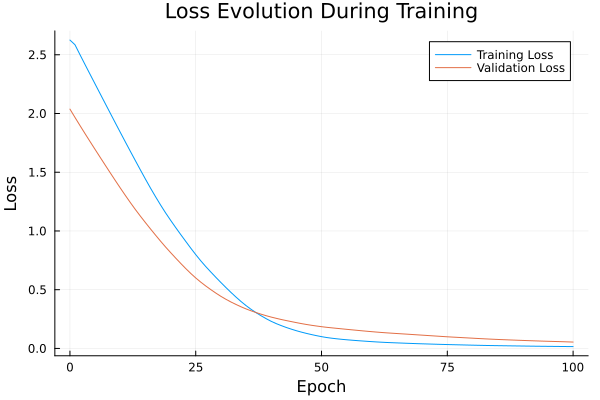

Basic Tutorial: Training with FYL on Argmax Benchmark
This tutorial demonstrates the basic workflow for training a policy using the Perturbed Fenchel-Young Loss algorithm.
Setup
using DecisionFocusedLearningAlgorithms
using DecisionFocusedLearningBenchmarks
using MLUtils: splitobs
using PlotsCreate Benchmark and Data
b = ArgmaxBenchmark()
dataset = generate_dataset(b, 100)
train_data, val_data, test_data = splitobs(dataset; at=(0.3, 0.3, 0.4))(DecisionFocusedLearningBenchmarks.Utils.DataSample{@NamedTuple{}, @NamedTuple{}, Matrix{Float32}, Vector{Float32}, Vector{Float32}}[DataSample(x=Float32[-1.52868 -0.989904 … -0.843804 0.576415; 0.137255 1.0912 … -0.494873 -0.182073; … ; -0.849763 -1.36192 … -0.584737 0.436972; 2.53534 -0.818128 … -0.0152119 0.471217], θ=Float32[0.665461, 3.53044, 1.0234, -1.84435, 0.360153, -0.065112, 2.0733, 3.63089, 1.04192, -0.549202], y=Float32[0.0, 0.0, 0.0, 0.0, 0.0, 0.0, 0.0, 1.0, 0.0, 0.0]), DataSample(x=Float32[-0.601531 -0.135649 … -0.534002 -1.30174; 0.234913 -1.51349 … 1.76896 -1.44262; … ; -1.04212 1.28391 … -2.0893 -0.82284; -0.574716 0.584673 … 0.677557 0.383603], θ=Float32[1.85337, -2.05225, 0.0195907, 2.85078, -0.478299, -1.57138, 0.603264, 0.785145, 1.91631, 1.35645], y=Float32[0.0, 0.0, 0.0, 1.0, 0.0, 0.0, 0.0, 0.0, 0.0, 0.0]), DataSample(x=Float32[-0.186539 -0.227799 … 0.233256 1.73943; 0.281977 1.59704 … -0.523892 0.266092; … ; -0.0600669 -1.00445 … 1.0827 1.6839; -0.292464 2.20507 … 0.00864151 0.0512443], θ=Float32[1.60573, 2.31344, -1.22297, -0.0092129, 0.489585, 1.33516, -0.940174, 0.456436, -0.774866, -1.17016], y=Float32[0.0, 1.0, 0.0, 0.0, 0.0, 0.0, 0.0, 0.0, 0.0, 0.0]), DataSample(x=Float32[-0.722537 0.181293 … -1.51455 0.204347; -0.196639 -0.587439 … -0.7421 -0.604429; … ; -0.932176 0.617232 … 0.0529661 1.15876; 0.670628 0.27689 … -0.525441 0.601817], θ=Float32[0.172279, 0.417366, -2.87221, -3.18884, 0.551652, -2.07511, 1.50149, 0.291415, 1.08283, 1.45466], y=Float32[0.0, 0.0, 0.0, 0.0, 0.0, 0.0, 1.0, 0.0, 0.0, 0.0]), DataSample(x=Float32[-1.17205 -0.812631 … 0.236666 0.267085; 0.167162 0.728895 … -0.0332064 -0.918292; … ; -0.424416 -2.05441 … 1.31709 0.975547; 0.404092 -2.1923 … -0.750174 -0.978947], θ=Float32[0.599725, 2.06969, 1.04034, 1.96341, 0.503935, -0.391407, 0.831376, 1.71356, -1.97608, -2.37108], y=Float32[0.0, 1.0, 0.0, 0.0, 0.0, 0.0, 0.0, 0.0, 0.0, 0.0]), DataSample(x=Float32[-1.90394 -0.751719 … 0.622231 -0.355321; 1.44244 -0.179377 … 0.950669 1.97275; … ; -0.520515 1.24787 … 0.641007 0.278799; 0.28015 0.725327 … 0.319155 0.465968], θ=Float32[2.57106, -1.89159, -3.08279, -0.432401, 0.0801596, -0.892393, -0.091173, 0.15684, 0.543038, 1.48842], y=Float32[1.0, 0.0, 0.0, 0.0, 0.0, 0.0, 0.0, 0.0, 0.0, 0.0]), DataSample(x=Float32[0.835262 0.583017 … -0.547225 -0.982169; -1.26768 -0.747322 … -0.969303 0.472825; … ; 0.54542 0.853804 … -1.80638 -0.121847; 1.19615 0.244807 … -0.171073 -1.81485], θ=Float32[-3.09784, -1.6803, 0.598653, 1.67483, 1.40747, -0.0592414, -0.0303911, 0.977586, -0.463276, 2.97271], y=Float32[0.0, 0.0, 0.0, 0.0, 0.0, 0.0, 0.0, 0.0, 0.0, 1.0]), DataSample(x=Float32[0.22642 0.387162 … 1.82506 0.0364475; -0.374847 0.466304 … -0.533913 0.427883; … ; -0.747456 0.159178 … 1.65505 0.795705; 0.433751 -0.0322992 … -1.49953 1.63687], θ=Float32[-0.305592, 1.96901, -0.484644, 0.67401, -1.95277, -1.64245, -1.38723, -0.931988, -1.69981, -0.806102], y=Float32[0.0, 1.0, 0.0, 0.0, 0.0, 0.0, 0.0, 0.0, 0.0, 0.0]), DataSample(x=Float32[0.085666 0.810641 … -1.22041 0.794532; -0.638372 0.1534 … 1.0205 0.881377; … ; -0.27535 -2.00464 … -0.0262479 -0.885253; 0.764344 0.0142338 … 0.0664941 0.153798], θ=Float32[-0.161395, 1.89059, -1.67951, 2.36167, -1.62764, -0.363208, -0.270486, -2.07231, 0.343359, 0.876545], y=Float32[0.0, 0.0, 0.0, 1.0, 0.0, 0.0, 0.0, 0.0, 0.0, 0.0]), DataSample(x=Float32[0.184626 1.47744 … -0.524838 -0.0167796; -1.29676 -0.531339 … 0.550855 -1.27803; … ; 0.437493 -0.377808 … -0.480056 -1.01902; 0.89474 0.377075 … 2.05384 -0.440437], θ=Float32[-0.587104, -0.95014, 2.34447, 0.781444, 1.10671, -3.4447, 0.319968, 2.09835, 0.0754469, -0.877757], y=Float32[0.0, 0.0, 1.0, 0.0, 0.0, 0.0, 0.0, 0.0, 0.0, 0.0]) … DataSample(x=Float32[-0.750652 1.84892 … -0.217444 0.409871; 0.795823 0.25108 … 1.20982 -1.15299; … ; 0.0550848 -0.260977 … 0.738171 0.617297; 0.630264 0.0065399 … 0.10787 -1.38624], θ=Float32[0.396095, -0.219367, 0.525488, 1.29763, 0.440605, -2.20303, -0.816709, -1.8446, 2.46448, -0.583423], y=Float32[0.0, 0.0, 0.0, 0.0, 0.0, 0.0, 0.0, 0.0, 1.0, 0.0]), DataSample(x=Float32[-0.84177 1.58388 … -0.112752 0.117646; 0.599848 -2.33418 … 0.0170973 -0.528503; … ; 0.425722 -1.04091 … 0.760651 1.16444; -0.177828 1.53514 … -0.0960687 -0.576735], θ=Float32[0.282228, -2.77721, 1.06392, -0.252835, -0.110877, 3.85775, -2.54735, 0.496559, -0.491741, 0.354262], y=Float32[0.0, 0.0, 0.0, 0.0, 0.0, 1.0, 0.0, 0.0, 0.0, 0.0]), DataSample(x=Float32[0.677267 -0.0776208 … -1.40735 -1.47659; -0.644881 2.04484 … 1.89985 -0.195943; … ; 0.938086 -1.68321 … 1.99023 -0.934323; 0.912762 1.24983 … 0.247201 -0.323475], θ=Float32[-1.26359, 3.24824, 2.26983, 0.328569, -0.126288, 0.294786, 0.597621, 1.5702, 1.47298, 1.82033], y=Float32[0.0, 1.0, 0.0, 0.0, 0.0, 0.0, 0.0, 0.0, 0.0, 0.0]), DataSample(x=Float32[-0.651924 -0.920714 … -2.25332 -1.0294; -0.199305 0.655676 … -0.367553 -0.773737; … ; 1.5173 -0.293184 … -1.03668 -1.07338; 2.9525 0.648066 … 0.262838 -1.6639], θ=Float32[-1.08881, -1.07311, 3.23607, -0.229818, 0.709965, -0.693702, -1.2615, 0.0721628, 1.40852, 1.67401], y=Float32[0.0, 0.0, 1.0, 0.0, 0.0, 0.0, 0.0, 0.0, 0.0, 0.0]), DataSample(x=Float32[-0.475548 -0.467826 … 1.13543 1.68768; 0.53143 -0.213035 … -1.76893 -0.945077; … ; -0.145029 0.429659 … -0.746879 0.899566; -0.270016 0.255824 … 0.437241 0.626175], θ=Float32[0.85115, -1.4472, 3.01418, -0.80724, 2.87081, -0.686141, 0.69904, 2.35144, -1.98247, -3.35896], y=Float32[0.0, 0.0, 1.0, 0.0, 0.0, 0.0, 0.0, 0.0, 0.0, 0.0]), DataSample(x=Float32[1.01798 0.148589 … 0.27858 -0.245306; -0.225101 -0.0323367 … 1.53573 0.589473; … ; 0.0611463 1.48496 … 1.52599 0.451278; -0.0108727 -0.748986 … 0.496934 0.106005], θ=Float32[0.333727, -1.74648, -0.664121, -1.42651, -0.853771, -1.94423, -1.21882, -2.53319, -0.753243, 1.49846], y=Float32[0.0, 0.0, 0.0, 0.0, 0.0, 0.0, 0.0, 0.0, 0.0, 1.0]), DataSample(x=Float32[2.21261 -0.0981398 … -0.914475 -0.12496; 0.208084 1.94205 … -1.18505 0.205634; … ; 0.608715 -1.14107 … -1.6777 0.664665; 0.282181 -1.24956 … 0.672765 0.84025], θ=Float32[-1.37072, 2.93123, 3.04123, 0.791641, -0.856542, 0.235825, -1.45033, 0.288237, -1.23051, -0.976928], y=Float32[0.0, 0.0, 1.0, 0.0, 0.0, 0.0, 0.0, 0.0, 0.0, 0.0]), DataSample(x=Float32[0.262012 -1.59995 … 1.36465 -1.32587; 1.46697 0.468692 … 0.556343 -0.854671; … ; 0.46727 0.614609 … 0.110304 -1.09382; -0.314212 0.867792 … 0.512706 0.0663085], θ=Float32[1.23754, 0.491938, 2.23912, -1.27532, -0.351689, -1.45807, 1.95311, 2.31537, -0.42473, -0.219843], y=Float32[0.0, 0.0, 0.0, 0.0, 0.0, 0.0, 0.0, 1.0, 0.0, 0.0]), DataSample(x=Float32[1.31833 0.811241 … -0.822485 -0.845023; 0.28742 0.173569 … -0.296642 -0.793593; … ; -0.234779 0.313481 … 0.41024 -0.477078; 1.61346 0.111623 … 0.274614 1.09481], θ=Float32[-0.446509, -1.4793, -2.24134, -0.202787, -1.96331, 0.931478, 1.42921, 1.58582, -1.09315, -0.743851], y=Float32[0.0, 0.0, 0.0, 0.0, 0.0, 0.0, 0.0, 1.0, 0.0, 0.0]), DataSample(x=Float32[1.0044 -0.577503 … -1.63528 1.5764; -0.846003 -1.55024 … -2.47208 0.682008; … ; 0.727181 -1.63851 … -0.227585 0.48022; -1.12631 0.405632 … -1.01007 -0.712168], θ=Float32[-1.14207, -0.872044, -1.9048, -2.02116, 0.0910651, 0.211059, -0.198424, 0.342024, -0.317606, 0.712887], y=Float32[0.0, 0.0, 0.0, 0.0, 0.0, 0.0, 0.0, 0.0, 0.0, 1.0])], DecisionFocusedLearningBenchmarks.Utils.DataSample{@NamedTuple{}, @NamedTuple{}, Matrix{Float32}, Vector{Float32}, Vector{Float32}}[DataSample(x=Float32[-0.295227 0.270158 … 0.932698 0.225436; -0.079174 -0.24771 … -1.10981 -1.27207; … ; -0.0646886 1.69205 … 0.49428 0.917676; -1.68295 0.481686 … 0.768501 1.34636], θ=Float32[-0.268104, -1.00036, 0.181527, -1.4856, 1.65009, -0.524558, 1.34416, 2.13557, -3.14588, -3.20673], y=Float32[0.0, 0.0, 0.0, 0.0, 0.0, 0.0, 0.0, 1.0, 0.0, 0.0]), DataSample(x=Float32[-0.639664 1.07771 … -1.30523 1.15558; -1.99979 0.728444 … 1.52682 1.21498; … ; -0.111864 -0.169049 … 2.30131 -1.10197; 0.318314 1.49969 … 0.668597 -0.663645], θ=Float32[-1.90501, -0.200345, -0.488396, 1.05074, 0.163812, 0.783067, -1.13983, 1.07309, 0.971407, 1.67465], y=Float32[0.0, 0.0, 0.0, 0.0, 0.0, 0.0, 0.0, 0.0, 0.0, 1.0]), DataSample(x=Float32[1.48819 -1.10745 … -1.00252 -0.371478; -0.1529 -0.0705229 … -0.403451 0.243605; … ; 0.183625 -0.253023 … -0.471142 -0.232421; -0.357052 -0.473593 … -1.05619 0.217933], θ=Float32[-0.114341, 1.6962, 1.03154, -2.24901, -0.256628, 0.387335, -0.0236446, 0.994078, 0.894919, -0.173744], y=Float32[0.0, 1.0, 0.0, 0.0, 0.0, 0.0, 0.0, 0.0, 0.0, 0.0]), DataSample(x=Float32[0.23601 0.158942 … 0.741439 -3.46341; 0.399562 -1.11592 … -0.208586 -0.406005; … ; -1.29921 -0.109491 … -1.14852 0.607735; -0.0759361 -0.991624 … -0.467896 -0.662008], θ=Float32[-0.0954365, -0.702008, -0.953663, 1.14312, 1.51571, 1.32207, -2.64969, 1.86032, -0.452186, 1.44504], y=Float32[0.0, 0.0, 0.0, 0.0, 0.0, 0.0, 0.0, 1.0, 0.0, 0.0]), DataSample(x=Float32[0.0906323 0.866903 … 0.763535 -0.299655; 0.0313538 -0.288276 … -3.35075 1.32032; … ; -0.337564 0.971596 … -1.50989 -0.806555; -1.58382 0.296836 … 0.286164 0.329293], θ=Float32[0.245107, -0.812547, -0.131229, -2.27172, -1.34486, -0.061984, -1.31036, -1.00474, -2.67438, 1.59487], y=Float32[0.0, 0.0, 0.0, 0.0, 0.0, 0.0, 0.0, 0.0, 0.0, 1.0]), DataSample(x=Float32[0.90323 0.644319 … 1.64412 -0.986442; -0.479651 -0.3853 … -0.572764 1.44157; … ; -0.975501 1.75013 … -0.720003 0.312083; 0.221508 0.667632 … -1.03231 1.16244], θ=Float32[-0.0434982, -1.56266, -0.0766493, -4.58307, -1.54977, -0.00515139, -0.372466, -0.959828, -0.491573, 0.394286], y=Float32[0.0, 0.0, 0.0, 0.0, 0.0, 0.0, 0.0, 0.0, 0.0, 1.0]), DataSample(x=Float32[-0.0859667 -0.92952 … 1.58284 -0.242603; 1.72905 0.107004 … -1.01256 0.950077; … ; -1.2197 -1.30511 … -1.32771 1.90338; 0.322427 0.350107 … 0.0545974 0.621792], θ=Float32[2.95589, 0.874018, 0.33432, 0.336601, 2.0193, -0.369251, -0.753116, 0.238566, -1.21911, 0.179815], y=Float32[1.0, 0.0, 0.0, 0.0, 0.0, 0.0, 0.0, 0.0, 0.0, 0.0]), DataSample(x=Float32[-1.20039 1.62524 … -0.195849 0.00728848; -1.90799 1.50162 … -0.684548 -0.26261; … ; -0.476477 -0.686945 … -1.84877 -0.174741; -2.30806 -0.0196869 … 0.432892 -0.921892], θ=Float32[-1.41328, 0.689277, 1.19007, -2.74891, 0.596009, -1.75409, -0.773708, -1.43547, -0.624631, 0.438891], y=Float32[0.0, 0.0, 1.0, 0.0, 0.0, 0.0, 0.0, 0.0, 0.0, 0.0]), DataSample(x=Float32[-0.272984 -0.0737206 … -0.0601105 -0.29125; -1.90333 -0.412655 … -1.42508 0.976745; … ; 0.746909 -1.67183 … 0.576548 0.33165; -0.29465 0.198471 … -0.515855 2.23686], θ=Float32[-2.30005, 0.295073, -2.11141, 0.316595, 0.12071, -1.33552, -1.00717, 0.649906, -1.99553, -0.212711], y=Float32[0.0, 0.0, 0.0, 0.0, 0.0, 0.0, 0.0, 1.0, 0.0, 0.0]), DataSample(x=Float32[0.282697 -1.0909 … -1.14477 -0.471072; 1.0971 -0.749342 … -1.82275 1.01888; … ; -0.818235 -0.312022 … 0.448845 0.320904; -0.0561017 -0.500811 … -1.0506 -0.934601], θ=Float32[1.27471, 1.07552, -2.04543, 0.0476061, 2.01864, -0.373243, -2.42018, 0.315253, 0.373106, 1.44514], y=Float32[0.0, 0.0, 0.0, 0.0, 1.0, 0.0, 0.0, 0.0, 0.0, 0.0]) … DataSample(x=Float32[0.217426 0.678133 … 1.87969 0.120762; 1.2172 -0.145168 … -0.999849 -0.491591; … ; 0.9907 0.917339 … 0.452815 -0.298035; 0.875242 -0.0475292 … -0.0821549 2.43548], θ=Float32[1.01416, -0.0356878, 4.31871, 1.3173, -1.15661, 1.29719, 0.382897, 3.04614, -2.35171, -1.63033], y=Float32[0.0, 0.0, 1.0, 0.0, 0.0, 0.0, 0.0, 0.0, 0.0, 0.0]), DataSample(x=Float32[-0.220079 1.33196 … 0.89207 1.32381; -0.766054 -0.384755 … 1.1936 -1.3846; … ; -0.748847 -0.572068 … -0.483679 -1.25414; -0.133782 0.67783 … -0.645613 0.147718], θ=Float32[0.289838, 0.265309, 0.705221, 3.87963, -1.47586, 0.629168, -1.7178, -5.24833, 0.551322, -2.43376], y=Float32[0.0, 0.0, 0.0, 1.0, 0.0, 0.0, 0.0, 0.0, 0.0, 0.0]), DataSample(x=Float32[-0.00970295 0.899217 … 0.262216 -0.043649; 0.0959353 0.348871 … -0.181212 0.0463697; … ; -1.98642 1.05034 … 0.0332512 -0.151133; 1.08518 -0.0839155 … 1.05807 -1.42354], θ=Float32[2.46958, -1.22629, 0.31694, 4.26324, 1.35882, 0.946989, 0.391621, -0.995977, -0.045635, 0.816782], y=Float32[0.0, 0.0, 0.0, 1.0, 0.0, 0.0, 0.0, 0.0, 0.0, 0.0]), DataSample(x=Float32[0.406774 0.586424 … -1.26965 -1.69955; 0.92154 0.170206 … -0.443871 -0.363118; … ; 2.82711 0.796707 … -1.836 -0.57275; -0.235694 -0.468834 … -0.448263 -0.210222], θ=Float32[0.115818, 0.610683, 1.25433, 0.767051, -0.000799986, -3.09704, 0.436026, -0.738538, 1.67929, -0.234409], y=Float32[0.0, 0.0, 0.0, 0.0, 0.0, 0.0, 0.0, 0.0, 1.0, 0.0]), DataSample(x=Float32[-1.07037 0.114993 … 0.621529 -2.05709; 1.67693 1.40082 … -1.18557 -1.37316; … ; -0.367195 1.02243 … 0.0230958 1.06267; 0.675993 0.671314 … 0.101916 0.290313], θ=Float32[2.68944, 0.261527, -1.64919, 0.105946, 1.6521, 0.349974, -0.0200594, 0.0730172, -0.601313, -1.60122], y=Float32[1.0, 0.0, 0.0, 0.0, 0.0, 0.0, 0.0, 0.0, 0.0, 0.0]), DataSample(x=Float32[-0.825985 -0.258705 … -1.37868 0.12896; -0.515463 0.704378 … -0.349808 0.148609; … ; 0.83336 -0.360664 … -1.59253 0.795012; 0.810167 0.660257 … -1.15856 0.0304479], θ=Float32[-0.0665309, 0.488686, -1.79463, 2.22066, -1.96699, 2.68237, 0.275046, -1.04682, 1.96996, 1.25747], y=Float32[0.0, 0.0, 0.0, 0.0, 0.0, 1.0, 0.0, 0.0, 0.0, 0.0]), DataSample(x=Float32[2.4028 0.817056 … -0.219768 1.37635; -0.1442 0.363413 … -0.772327 1.20974; … ; 0.367534 0.586069 … 0.0748816 -1.31295; 1.02776 1.24061 … -0.805368 -0.551168], θ=Float32[-3.49774, -1.56892, 2.14784, 2.123, -0.847135, 1.20321, 1.18214, 1.39864, 1.37441, 1.01633], y=Float32[0.0, 0.0, 1.0, 0.0, 0.0, 0.0, 0.0, 0.0, 0.0, 0.0]), DataSample(x=Float32[-0.28214 0.437404 … -0.159326 -1.64346; 0.173457 1.71306 … -0.701033 0.637886; … ; 1.66538 -1.19517 … 0.430967 -0.559063; 0.589966 1.29815 … 1.38288 -0.518238], θ=Float32[0.525129, 1.60826, -1.70192, 1.87985, 1.28789, -2.14916, -1.57736, -0.133592, 0.421152, 1.79386], y=Float32[0.0, 0.0, 0.0, 1.0, 0.0, 0.0, 0.0, 0.0, 0.0, 0.0]), DataSample(x=Float32[0.726816 0.0060484 … -0.265986 0.471196; 0.590346 -2.56071 … 0.607157 0.324418; … ; 1.24385 -1.26401 … 1.05299 0.26332; 2.66649 0.705197 … -1.66158 -0.738214], θ=Float32[-0.821458, -2.38085, -0.791358, -0.0929727, 1.26345, -0.832148, 1.71341, 0.590839, 0.448168, -0.00258576], y=Float32[0.0, 0.0, 0.0, 0.0, 0.0, 0.0, 1.0, 0.0, 0.0, 0.0]), DataSample(x=Float32[-0.612939 -0.464934 … -0.00174352 -0.740504; -1.04998 -1.02715 … 1.14438 -0.0718727; … ; 0.466953 -0.174535 … -2.25685 0.0759509; -0.0329732 -0.348019 … -0.0802873 0.35932], θ=Float32[-1.7843, -0.190461, 1.78674, 0.930731, 2.38509, 0.393582, 1.19795, 1.73847, 2.69822, -0.341039], y=Float32[0.0, 0.0, 0.0, 0.0, 0.0, 0.0, 0.0, 0.0, 1.0, 0.0])], DecisionFocusedLearningBenchmarks.Utils.DataSample{@NamedTuple{}, @NamedTuple{}, Matrix{Float32}, Vector{Float32}, Vector{Float32}}[DataSample(x=Float32[-0.162333 1.61674 … 0.730294 2.15472; -1.46499 -0.387723 … 1.38077 0.743378; … ; -1.09208 -0.682164 … 0.146433 -0.208952; 0.574722 -0.732728 … -0.418232 -0.802684], θ=Float32[-0.555474, -1.97967, -0.54007, -1.60025, 0.454525, 1.42446, 0.58119, -0.319654, 0.946454, -0.796532], y=Float32[0.0, 0.0, 0.0, 0.0, 0.0, 1.0, 0.0, 0.0, 0.0, 0.0]), DataSample(x=Float32[0.493629 0.04561 … -1.11129 -0.266873; -1.5669 1.81979 … 1.38344 1.41601; … ; 1.1095 1.4993 … -0.0926357 -1.3824; -0.518224 -0.613935 … -1.36605 -0.765537], θ=Float32[-1.71018, -0.6038, 3.07781, 1.5655, -0.526062, 0.635745, -1.22752, 0.0809735, 1.91309, 2.31616], y=Float32[0.0, 0.0, 1.0, 0.0, 0.0, 0.0, 0.0, 0.0, 0.0, 0.0]), DataSample(x=Float32[1.98047 0.0690647 … -1.4236 2.45612; 0.437469 -0.862476 … -0.79574 0.950421; … ; -0.249117 0.173469 … 0.234516 0.97293; -2.42922 -2.83208 … -0.489466 0.832556], θ=Float32[-0.815251, -1.18204, 0.626082, 0.602656, -0.357913, 0.0755313, 0.745285, 0.335675, 0.737356, -1.86642], y=Float32[0.0, 0.0, 0.0, 0.0, 0.0, 0.0, 1.0, 0.0, 0.0, 0.0]), DataSample(x=Float32[-0.274231 0.840802 … -0.842398 1.40012; 0.902103 -0.661229 … -1.73874 -0.306631; … ; 0.295076 -0.889737 … -0.294605 1.29019; -0.369593 0.262085 … 0.336289 0.918085], θ=Float32[1.33787, -0.472629, -2.09352, 0.574603, -0.91889, -2.32168, -0.284439, -1.19955, 0.46171, -2.0489], y=Float32[1.0, 0.0, 0.0, 0.0, 0.0, 0.0, 0.0, 0.0, 0.0, 0.0]), DataSample(x=Float32[-0.906322 0.0828798 … 2.07588 0.183008; 0.585901 -0.0337536 … -0.000588805 2.50452; … ; 1.29731 0.219125 … 1.06429 -0.451918; -0.518972 0.277283 … 2.24012 1.00481], θ=Float32[1.85041, -1.19561, 0.0754475, 3.00042, 0.06789, 0.183, 3.25221, -1.89332, -2.73858, 1.98412], y=Float32[0.0, 0.0, 0.0, 0.0, 0.0, 0.0, 1.0, 0.0, 0.0, 0.0]), DataSample(x=Float32[0.0449953 0.936776 … 1.80719 0.405226; -0.722271 -0.680814 … -1.22786 0.586406; … ; 0.455643 -0.949572 … -0.809744 -2.90237; 0.50102 -1.04058 … 0.611851 -0.177607], θ=Float32[-1.70573, -0.799193, -0.459402, -0.0257228, -3.28766, 1.72285, -2.43177, -0.102663, -1.80774, 1.09482], y=Float32[0.0, 0.0, 0.0, 0.0, 0.0, 1.0, 0.0, 0.0, 0.0, 0.0]), DataSample(x=Float32[-0.368222 1.4175 … 0.187505 -1.31513; 0.865205 0.527282 … -0.122863 1.10084; … ; -0.671083 -0.186023 … -0.400021 1.41271; -1.21469 1.07461 … 1.98594 1.15243], θ=Float32[1.81982, -1.33343, -1.21343, -0.811217, -2.49022, 2.25952, -0.051797, 0.178934, -0.874966, 2.50595], y=Float32[0.0, 0.0, 0.0, 0.0, 0.0, 0.0, 0.0, 0.0, 0.0, 1.0]), DataSample(x=Float32[-2.03135 0.456177 … -0.579139 -0.905806; 1.01032 -0.402503 … 0.551099 -0.00750365; … ; -1.26772 2.61976 … 0.137987 -1.33333; 0.032707 -1.76686 … 0.028429 -1.35756], θ=Float32[2.69906, 0.125865, 0.369272, 0.120529, 1.60916, -2.11017, -2.32294, 0.0643835, 0.261193, 1.66935], y=Float32[1.0, 0.0, 0.0, 0.0, 0.0, 0.0, 0.0, 0.0, 0.0, 0.0]), DataSample(x=Float32[-0.20879 -0.619215 … -1.01836 0.819095; 0.0879717 -0.393343 … 0.331868 -0.0884568; … ; 1.6501 0.714998 … -1.00017 -0.617957; -1.25175 0.357981 … 0.984901 0.831901], θ=Float32[-0.615261, 0.0268012, -0.459248, -2.19156, -0.483522, 2.97884, 1.18004, 0.392327, 0.909947, 0.419704], y=Float32[0.0, 0.0, 0.0, 0.0, 0.0, 1.0, 0.0, 0.0, 0.0, 0.0]), DataSample(x=Float32[1.34818 0.558107 … -1.69902 -0.924689; 1.19021 1.42288 … -0.438918 0.648418; … ; 0.0449137 1.15701 … 0.0248833 0.578512; 0.29699 0.507518 … -0.42416 -0.418877], θ=Float32[0.460996, -0.615841, -0.766227, -0.976918, -0.703156, 1.97634, -2.0268, -1.22416, 1.29827, -0.155529], y=Float32[0.0, 0.0, 0.0, 0.0, 0.0, 1.0, 0.0, 0.0, 0.0, 0.0]) … DataSample(x=Float32[0.568217 -1.22511 … 1.71426 0.744336; -1.53528 -0.874826 … -0.224888 1.0601; … ; -0.282461 -0.308392 … 1.42229 0.711522; 0.563638 -0.897946 … -2.13435 0.962434], θ=Float32[-1.60553, 0.775083, -0.316215, -1.76837, 1.53009, -0.492519, 1.03791, 0.00263268, -2.58318, 0.636364], y=Float32[0.0, 0.0, 0.0, 0.0, 1.0, 0.0, 0.0, 0.0, 0.0, 0.0]), DataSample(x=Float32[-0.658199 -0.885643 … 0.329757 -0.767645; 0.0329431 0.910903 … -0.438039 0.679366; … ; 0.478039 -0.687691 … -0.446951 1.30412; 0.326381 0.785278 … -0.124437 -1.79747], θ=Float32[-0.0814959, 1.66298, -1.05721, -0.931096, -0.780064, -0.582279, 0.192457, 0.539086, 1.48417, 0.933641], y=Float32[0.0, 1.0, 0.0, 0.0, 0.0, 0.0, 0.0, 0.0, 0.0, 0.0]), DataSample(x=Float32[-0.50029 -2.40276 … 1.05872 0.141317; -0.327119 -1.16252 … 0.0751384 0.861466; … ; 0.683384 -1.54428 … 0.995368 0.0380633; 0.444352 0.664008 … -1.59494 -0.591709], θ=Float32[-0.810887, 1.33481, 0.290759, -1.48648, -1.59455, 1.63839, 0.400761, 1.02197, -2.0084, 0.184578], y=Float32[0.0, 0.0, 0.0, 0.0, 0.0, 1.0, 0.0, 0.0, 0.0, 0.0]), DataSample(x=Float32[1.47197 -1.81284 … 2.35789 1.7358; 1.27755 -1.69628 … 0.0980076 -0.841819; … ; -1.37213 -1.18106 … -1.13914 -1.27829; -0.801103 -0.210205 … -0.485129 0.725355], θ=Float32[0.416863, -1.62526, 2.47296, -0.462812, 1.12957, -1.5924, -1.45208, 1.36137, -0.78412, -1.72027], y=Float32[0.0, 0.0, 1.0, 0.0, 0.0, 0.0, 0.0, 0.0, 0.0, 0.0]), DataSample(x=Float32[0.999871 -1.56902 … -1.17527 -1.34333; 0.698202 0.326697 … -0.847098 0.659502; … ; 0.680956 0.551244 … -1.65674 -0.399469; -2.07084 -0.0817086 … 0.227287 -1.25535], θ=Float32[1.76631, 0.440151, 0.297268, 0.28132, -2.16898, 0.584362, -0.180362, 1.06436, 1.34328, 2.10414], y=Float32[0.0, 0.0, 0.0, 0.0, 0.0, 0.0, 0.0, 0.0, 0.0, 1.0]), DataSample(x=Float32[1.72335 -0.84789 … 2.56741 -0.35814; -1.42344 1.55273 … 0.00115714 0.0823985; … ; 1.08243 1.34175 … -0.783198 -0.339285; 2.13783 -0.0457933 … 0.829662 1.3203], θ=Float32[-4.39036, 0.859563, -0.484991, 0.428238, -0.0559795, 2.54906, 1.80985, 0.748698, -0.901332, 1.22615], y=Float32[0.0, 0.0, 0.0, 0.0, 0.0, 1.0, 0.0, 0.0, 0.0, 0.0]), DataSample(x=Float32[0.396819 0.917836 … -1.60942 0.210474; 1.04101 1.10218 … 1.0935 -0.619419; … ; 0.761893 1.26202 … 1.11995 0.17576; -0.381039 1.57509 … -0.901847 1.23339], θ=Float32[1.54489, -0.685359, 0.429037, 0.265506, -1.37895, 1.22969, 0.71493, 0.922147, 1.34168, 0.162942], y=Float32[1.0, 0.0, 0.0, 0.0, 0.0, 0.0, 0.0, 0.0, 0.0, 0.0]), DataSample(x=Float32[0.00812397 -1.09364 … 0.322969 -0.380165; -0.334434 0.0191743 … 1.29497 1.13827; … ; -1.73957 -1.05947 … 1.18217 1.61365; 1.41015 -0.0615284 … 0.0574398 1.49266], θ=Float32[-0.442069, 2.10421, 0.453032, -2.81771, -0.277061, -4.38795, -0.242152, -1.24721, -0.553154, 0.504208], y=Float32[0.0, 1.0, 0.0, 0.0, 0.0, 0.0, 0.0, 0.0, 0.0, 0.0]), DataSample(x=Float32[-0.644898 0.496523 … 0.552248 2.1396; 1.27106 -0.0431908 … -0.974011 -0.0776714; … ; -0.896243 -0.254169 … 0.761881 0.268255; 0.244584 -0.689543 … 0.333331 0.0255282], θ=Float32[0.791526, -1.36607, -1.38954, 1.85795, 1.43845, 0.187795, 1.74214, -2.56082, -1.44928, -2.17061], y=Float32[0.0, 0.0, 0.0, 1.0, 0.0, 0.0, 0.0, 0.0, 0.0, 0.0]), DataSample(x=Float32[-0.202049 0.998138 … 0.538165 -0.0198977; 0.830523 -0.654003 … 0.147503 0.758591; … ; 0.313831 1.4894 … -1.12495 -0.272156; 0.520173 0.707648 … 0.741063 0.845105], θ=Float32[0.686356, -2.52855, 0.690771, -2.42918, 3.31599, 1.1133, 0.750786, -1.08316, -0.585671, 0.654584], y=Float32[0.0, 0.0, 0.0, 0.0, 1.0, 0.0, 0.0, 0.0, 0.0, 0.0])], DecisionFocusedLearningBenchmarks.Utils.DataSample{@NamedTuple{}, @NamedTuple{}, Matrix{Float32}, Vector{Float32}, Vector{Float32}}[])Create Policy
model = generate_statistical_model(b; seed=0)
maximizer = generate_maximizer(b)
policy = DFLPolicy(model, maximizer)DFLPolicy{Flux.Chain{Tuple{Flux.Dense{typeof(identity), Matrix{Float32}, Bool}, typeof(vec)}}, typeof(DecisionFocusedLearningBenchmarks.Argmax.one_hot_argmax)}(Chain(Dense(5 => 1; bias=false), vec), DecisionFocusedLearningBenchmarks.Argmax.one_hot_argmax)Configure Algorithm
algorithm = PerturbedFenchelYoungLossImitation(;
nb_samples=10, ε=0.1, threaded=true, seed=0
)PerturbedFenchelYoungLossImitation{Optimisers.Adam{Float64, Tuple{Float64, Float64}, Float64}, Int64}(10, 0.1, true, Optimisers.Adam(eta=0.001, beta=(0.9, 0.999), epsilon=1.0e-8), 0, false)Define Metrics to track during training
validation_loss_metric = FYLLossMetric(val_data, :validation_loss)
val_gap_metric = FunctionMetric(:val_gap, val_data) do ctx, data
return compute_gap(b, data, ctx.policy.statistical_model, ctx.policy.maximizer)
end
test_gap_metric = FunctionMetric(:test_gap, test_data) do ctx, data
return compute_gap(b, data, ctx.policy.statistical_model, ctx.policy.maximizer)
end
metrics = (validation_loss_metric, val_gap_metric, test_gap_metric)(FYLLossMetric{SubArray{DecisionFocusedLearningBenchmarks.Utils.DataSample{@NamedTuple{}, @NamedTuple{}, Matrix{Float32}, Vector{Float32}, Vector{Float32}}, 1, Vector{DecisionFocusedLearningBenchmarks.Utils.DataSample{@NamedTuple{}, @NamedTuple{}, Matrix{Float32}, Vector{Float32}, Vector{Float32}}}, Tuple{UnitRange{Int64}}, true}}(DecisionFocusedLearningBenchmarks.Utils.DataSample{@NamedTuple{}, @NamedTuple{}, Matrix{Float32}, Vector{Float32}, Vector{Float32}}[DataSample(x=Float32[-0.295227 0.270158 … 0.932698 0.225436; -0.079174 -0.24771 … -1.10981 -1.27207; … ; -0.0646886 1.69205 … 0.49428 0.917676; -1.68295 0.481686 … 0.768501 1.34636], θ=Float32[-0.268104, -1.00036, 0.181527, -1.4856, 1.65009, -0.524558, 1.34416, 2.13557, -3.14588, -3.20673], y=Float32[0.0, 0.0, 0.0, 0.0, 0.0, 0.0, 0.0, 1.0, 0.0, 0.0]), DataSample(x=Float32[-0.639664 1.07771 … -1.30523 1.15558; -1.99979 0.728444 … 1.52682 1.21498; … ; -0.111864 -0.169049 … 2.30131 -1.10197; 0.318314 1.49969 … 0.668597 -0.663645], θ=Float32[-1.90501, -0.200345, -0.488396, 1.05074, 0.163812, 0.783067, -1.13983, 1.07309, 0.971407, 1.67465], y=Float32[0.0, 0.0, 0.0, 0.0, 0.0, 0.0, 0.0, 0.0, 0.0, 1.0]), DataSample(x=Float32[1.48819 -1.10745 … -1.00252 -0.371478; -0.1529 -0.0705229 … -0.403451 0.243605; … ; 0.183625 -0.253023 … -0.471142 -0.232421; -0.357052 -0.473593 … -1.05619 0.217933], θ=Float32[-0.114341, 1.6962, 1.03154, -2.24901, -0.256628, 0.387335, -0.0236446, 0.994078, 0.894919, -0.173744], y=Float32[0.0, 1.0, 0.0, 0.0, 0.0, 0.0, 0.0, 0.0, 0.0, 0.0]), DataSample(x=Float32[0.23601 0.158942 … 0.741439 -3.46341; 0.399562 -1.11592 … -0.208586 -0.406005; … ; -1.29921 -0.109491 … -1.14852 0.607735; -0.0759361 -0.991624 … -0.467896 -0.662008], θ=Float32[-0.0954365, -0.702008, -0.953663, 1.14312, 1.51571, 1.32207, -2.64969, 1.86032, -0.452186, 1.44504], y=Float32[0.0, 0.0, 0.0, 0.0, 0.0, 0.0, 0.0, 1.0, 0.0, 0.0]), DataSample(x=Float32[0.0906323 0.866903 … 0.763535 -0.299655; 0.0313538 -0.288276 … -3.35075 1.32032; … ; -0.337564 0.971596 … -1.50989 -0.806555; -1.58382 0.296836 … 0.286164 0.329293], θ=Float32[0.245107, -0.812547, -0.131229, -2.27172, -1.34486, -0.061984, -1.31036, -1.00474, -2.67438, 1.59487], y=Float32[0.0, 0.0, 0.0, 0.0, 0.0, 0.0, 0.0, 0.0, 0.0, 1.0]), DataSample(x=Float32[0.90323 0.644319 … 1.64412 -0.986442; -0.479651 -0.3853 … -0.572764 1.44157; … ; -0.975501 1.75013 … -0.720003 0.312083; 0.221508 0.667632 … -1.03231 1.16244], θ=Float32[-0.0434982, -1.56266, -0.0766493, -4.58307, -1.54977, -0.00515139, -0.372466, -0.959828, -0.491573, 0.394286], y=Float32[0.0, 0.0, 0.0, 0.0, 0.0, 0.0, 0.0, 0.0, 0.0, 1.0]), DataSample(x=Float32[-0.0859667 -0.92952 … 1.58284 -0.242603; 1.72905 0.107004 … -1.01256 0.950077; … ; -1.2197 -1.30511 … -1.32771 1.90338; 0.322427 0.350107 … 0.0545974 0.621792], θ=Float32[2.95589, 0.874018, 0.33432, 0.336601, 2.0193, -0.369251, -0.753116, 0.238566, -1.21911, 0.179815], y=Float32[1.0, 0.0, 0.0, 0.0, 0.0, 0.0, 0.0, 0.0, 0.0, 0.0]), DataSample(x=Float32[-1.20039 1.62524 … -0.195849 0.00728848; -1.90799 1.50162 … -0.684548 -0.26261; … ; -0.476477 -0.686945 … -1.84877 -0.174741; -2.30806 -0.0196869 … 0.432892 -0.921892], θ=Float32[-1.41328, 0.689277, 1.19007, -2.74891, 0.596009, -1.75409, -0.773708, -1.43547, -0.624631, 0.438891], y=Float32[0.0, 0.0, 1.0, 0.0, 0.0, 0.0, 0.0, 0.0, 0.0, 0.0]), DataSample(x=Float32[-0.272984 -0.0737206 … -0.0601105 -0.29125; -1.90333 -0.412655 … -1.42508 0.976745; … ; 0.746909 -1.67183 … 0.576548 0.33165; -0.29465 0.198471 … -0.515855 2.23686], θ=Float32[-2.30005, 0.295073, -2.11141, 0.316595, 0.12071, -1.33552, -1.00717, 0.649906, -1.99553, -0.212711], y=Float32[0.0, 0.0, 0.0, 0.0, 0.0, 0.0, 0.0, 1.0, 0.0, 0.0]), DataSample(x=Float32[0.282697 -1.0909 … -1.14477 -0.471072; 1.0971 -0.749342 … -1.82275 1.01888; … ; -0.818235 -0.312022 … 0.448845 0.320904; -0.0561017 -0.500811 … -1.0506 -0.934601], θ=Float32[1.27471, 1.07552, -2.04543, 0.0476061, 2.01864, -0.373243, -2.42018, 0.315253, 0.373106, 1.44514], y=Float32[0.0, 0.0, 0.0, 0.0, 1.0, 0.0, 0.0, 0.0, 0.0, 0.0]) … DataSample(x=Float32[0.217426 0.678133 … 1.87969 0.120762; 1.2172 -0.145168 … -0.999849 -0.491591; … ; 0.9907 0.917339 … 0.452815 -0.298035; 0.875242 -0.0475292 … -0.0821549 2.43548], θ=Float32[1.01416, -0.0356878, 4.31871, 1.3173, -1.15661, 1.29719, 0.382897, 3.04614, -2.35171, -1.63033], y=Float32[0.0, 0.0, 1.0, 0.0, 0.0, 0.0, 0.0, 0.0, 0.0, 0.0]), DataSample(x=Float32[-0.220079 1.33196 … 0.89207 1.32381; -0.766054 -0.384755 … 1.1936 -1.3846; … ; -0.748847 -0.572068 … -0.483679 -1.25414; -0.133782 0.67783 … -0.645613 0.147718], θ=Float32[0.289838, 0.265309, 0.705221, 3.87963, -1.47586, 0.629168, -1.7178, -5.24833, 0.551322, -2.43376], y=Float32[0.0, 0.0, 0.0, 1.0, 0.0, 0.0, 0.0, 0.0, 0.0, 0.0]), DataSample(x=Float32[-0.00970295 0.899217 … 0.262216 -0.043649; 0.0959353 0.348871 … -0.181212 0.0463697; … ; -1.98642 1.05034 … 0.0332512 -0.151133; 1.08518 -0.0839155 … 1.05807 -1.42354], θ=Float32[2.46958, -1.22629, 0.31694, 4.26324, 1.35882, 0.946989, 0.391621, -0.995977, -0.045635, 0.816782], y=Float32[0.0, 0.0, 0.0, 1.0, 0.0, 0.0, 0.0, 0.0, 0.0, 0.0]), DataSample(x=Float32[0.406774 0.586424 … -1.26965 -1.69955; 0.92154 0.170206 … -0.443871 -0.363118; … ; 2.82711 0.796707 … -1.836 -0.57275; -0.235694 -0.468834 … -0.448263 -0.210222], θ=Float32[0.115818, 0.610683, 1.25433, 0.767051, -0.000799986, -3.09704, 0.436026, -0.738538, 1.67929, -0.234409], y=Float32[0.0, 0.0, 0.0, 0.0, 0.0, 0.0, 0.0, 0.0, 1.0, 0.0]), DataSample(x=Float32[-1.07037 0.114993 … 0.621529 -2.05709; 1.67693 1.40082 … -1.18557 -1.37316; … ; -0.367195 1.02243 … 0.0230958 1.06267; 0.675993 0.671314 … 0.101916 0.290313], θ=Float32[2.68944, 0.261527, -1.64919, 0.105946, 1.6521, 0.349974, -0.0200594, 0.0730172, -0.601313, -1.60122], y=Float32[1.0, 0.0, 0.0, 0.0, 0.0, 0.0, 0.0, 0.0, 0.0, 0.0]), DataSample(x=Float32[-0.825985 -0.258705 … -1.37868 0.12896; -0.515463 0.704378 … -0.349808 0.148609; … ; 0.83336 -0.360664 … -1.59253 0.795012; 0.810167 0.660257 … -1.15856 0.0304479], θ=Float32[-0.0665309, 0.488686, -1.79463, 2.22066, -1.96699, 2.68237, 0.275046, -1.04682, 1.96996, 1.25747], y=Float32[0.0, 0.0, 0.0, 0.0, 0.0, 1.0, 0.0, 0.0, 0.0, 0.0]), DataSample(x=Float32[2.4028 0.817056 … -0.219768 1.37635; -0.1442 0.363413 … -0.772327 1.20974; … ; 0.367534 0.586069 … 0.0748816 -1.31295; 1.02776 1.24061 … -0.805368 -0.551168], θ=Float32[-3.49774, -1.56892, 2.14784, 2.123, -0.847135, 1.20321, 1.18214, 1.39864, 1.37441, 1.01633], y=Float32[0.0, 0.0, 1.0, 0.0, 0.0, 0.0, 0.0, 0.0, 0.0, 0.0]), DataSample(x=Float32[-0.28214 0.437404 … -0.159326 -1.64346; 0.173457 1.71306 … -0.701033 0.637886; … ; 1.66538 -1.19517 … 0.430967 -0.559063; 0.589966 1.29815 … 1.38288 -0.518238], θ=Float32[0.525129, 1.60826, -1.70192, 1.87985, 1.28789, -2.14916, -1.57736, -0.133592, 0.421152, 1.79386], y=Float32[0.0, 0.0, 0.0, 1.0, 0.0, 0.0, 0.0, 0.0, 0.0, 0.0]), DataSample(x=Float32[0.726816 0.0060484 … -0.265986 0.471196; 0.590346 -2.56071 … 0.607157 0.324418; … ; 1.24385 -1.26401 … 1.05299 0.26332; 2.66649 0.705197 … -1.66158 -0.738214], θ=Float32[-0.821458, -2.38085, -0.791358, -0.0929727, 1.26345, -0.832148, 1.71341, 0.590839, 0.448168, -0.00258576], y=Float32[0.0, 0.0, 0.0, 0.0, 0.0, 0.0, 1.0, 0.0, 0.0, 0.0]), DataSample(x=Float32[-0.612939 -0.464934 … -0.00174352 -0.740504; -1.04998 -1.02715 … 1.14438 -0.0718727; … ; 0.466953 -0.174535 … -2.25685 0.0759509; -0.0329732 -0.348019 … -0.0802873 0.35932], θ=Float32[-1.7843, -0.190461, 1.78674, 0.930731, 2.38509, 0.393582, 1.19795, 1.73847, 2.69822, -0.341039], y=Float32[0.0, 0.0, 0.0, 0.0, 0.0, 0.0, 0.0, 0.0, 1.0, 0.0])], LossAccumulator(:validation_loss, 0.0, 0)), FunctionMetric{Main.var"#2#3", SubArray{DecisionFocusedLearningBenchmarks.Utils.DataSample{@NamedTuple{}, @NamedTuple{}, Matrix{Float32}, Vector{Float32}, Vector{Float32}}, 1, Vector{DecisionFocusedLearningBenchmarks.Utils.DataSample{@NamedTuple{}, @NamedTuple{}, Matrix{Float32}, Vector{Float32}, Vector{Float32}}}, Tuple{UnitRange{Int64}}, true}}(Main.var"#2#3"(), :val_gap, DecisionFocusedLearningBenchmarks.Utils.DataSample{@NamedTuple{}, @NamedTuple{}, Matrix{Float32}, Vector{Float32}, Vector{Float32}}[DataSample(x=Float32[-0.295227 0.270158 … 0.932698 0.225436; -0.079174 -0.24771 … -1.10981 -1.27207; … ; -0.0646886 1.69205 … 0.49428 0.917676; -1.68295 0.481686 … 0.768501 1.34636], θ=Float32[-0.268104, -1.00036, 0.181527, -1.4856, 1.65009, -0.524558, 1.34416, 2.13557, -3.14588, -3.20673], y=Float32[0.0, 0.0, 0.0, 0.0, 0.0, 0.0, 0.0, 1.0, 0.0, 0.0]), DataSample(x=Float32[-0.639664 1.07771 … -1.30523 1.15558; -1.99979 0.728444 … 1.52682 1.21498; … ; -0.111864 -0.169049 … 2.30131 -1.10197; 0.318314 1.49969 … 0.668597 -0.663645], θ=Float32[-1.90501, -0.200345, -0.488396, 1.05074, 0.163812, 0.783067, -1.13983, 1.07309, 0.971407, 1.67465], y=Float32[0.0, 0.0, 0.0, 0.0, 0.0, 0.0, 0.0, 0.0, 0.0, 1.0]), DataSample(x=Float32[1.48819 -1.10745 … -1.00252 -0.371478; -0.1529 -0.0705229 … -0.403451 0.243605; … ; 0.183625 -0.253023 … -0.471142 -0.232421; -0.357052 -0.473593 … -1.05619 0.217933], θ=Float32[-0.114341, 1.6962, 1.03154, -2.24901, -0.256628, 0.387335, -0.0236446, 0.994078, 0.894919, -0.173744], y=Float32[0.0, 1.0, 0.0, 0.0, 0.0, 0.0, 0.0, 0.0, 0.0, 0.0]), DataSample(x=Float32[0.23601 0.158942 … 0.741439 -3.46341; 0.399562 -1.11592 … -0.208586 -0.406005; … ; -1.29921 -0.109491 … -1.14852 0.607735; -0.0759361 -0.991624 … -0.467896 -0.662008], θ=Float32[-0.0954365, -0.702008, -0.953663, 1.14312, 1.51571, 1.32207, -2.64969, 1.86032, -0.452186, 1.44504], y=Float32[0.0, 0.0, 0.0, 0.0, 0.0, 0.0, 0.0, 1.0, 0.0, 0.0]), DataSample(x=Float32[0.0906323 0.866903 … 0.763535 -0.299655; 0.0313538 -0.288276 … -3.35075 1.32032; … ; -0.337564 0.971596 … -1.50989 -0.806555; -1.58382 0.296836 … 0.286164 0.329293], θ=Float32[0.245107, -0.812547, -0.131229, -2.27172, -1.34486, -0.061984, -1.31036, -1.00474, -2.67438, 1.59487], y=Float32[0.0, 0.0, 0.0, 0.0, 0.0, 0.0, 0.0, 0.0, 0.0, 1.0]), DataSample(x=Float32[0.90323 0.644319 … 1.64412 -0.986442; -0.479651 -0.3853 … -0.572764 1.44157; … ; -0.975501 1.75013 … -0.720003 0.312083; 0.221508 0.667632 … -1.03231 1.16244], θ=Float32[-0.0434982, -1.56266, -0.0766493, -4.58307, -1.54977, -0.00515139, -0.372466, -0.959828, -0.491573, 0.394286], y=Float32[0.0, 0.0, 0.0, 0.0, 0.0, 0.0, 0.0, 0.0, 0.0, 1.0]), DataSample(x=Float32[-0.0859667 -0.92952 … 1.58284 -0.242603; 1.72905 0.107004 … -1.01256 0.950077; … ; -1.2197 -1.30511 … -1.32771 1.90338; 0.322427 0.350107 … 0.0545974 0.621792], θ=Float32[2.95589, 0.874018, 0.33432, 0.336601, 2.0193, -0.369251, -0.753116, 0.238566, -1.21911, 0.179815], y=Float32[1.0, 0.0, 0.0, 0.0, 0.0, 0.0, 0.0, 0.0, 0.0, 0.0]), DataSample(x=Float32[-1.20039 1.62524 … -0.195849 0.00728848; -1.90799 1.50162 … -0.684548 -0.26261; … ; -0.476477 -0.686945 … -1.84877 -0.174741; -2.30806 -0.0196869 … 0.432892 -0.921892], θ=Float32[-1.41328, 0.689277, 1.19007, -2.74891, 0.596009, -1.75409, -0.773708, -1.43547, -0.624631, 0.438891], y=Float32[0.0, 0.0, 1.0, 0.0, 0.0, 0.0, 0.0, 0.0, 0.0, 0.0]), DataSample(x=Float32[-0.272984 -0.0737206 … -0.0601105 -0.29125; -1.90333 -0.412655 … -1.42508 0.976745; … ; 0.746909 -1.67183 … 0.576548 0.33165; -0.29465 0.198471 … -0.515855 2.23686], θ=Float32[-2.30005, 0.295073, -2.11141, 0.316595, 0.12071, -1.33552, -1.00717, 0.649906, -1.99553, -0.212711], y=Float32[0.0, 0.0, 0.0, 0.0, 0.0, 0.0, 0.0, 1.0, 0.0, 0.0]), DataSample(x=Float32[0.282697 -1.0909 … -1.14477 -0.471072; 1.0971 -0.749342 … -1.82275 1.01888; … ; -0.818235 -0.312022 … 0.448845 0.320904; -0.0561017 -0.500811 … -1.0506 -0.934601], θ=Float32[1.27471, 1.07552, -2.04543, 0.0476061, 2.01864, -0.373243, -2.42018, 0.315253, 0.373106, 1.44514], y=Float32[0.0, 0.0, 0.0, 0.0, 1.0, 0.0, 0.0, 0.0, 0.0, 0.0]) … DataSample(x=Float32[0.217426 0.678133 … 1.87969 0.120762; 1.2172 -0.145168 … -0.999849 -0.491591; … ; 0.9907 0.917339 … 0.452815 -0.298035; 0.875242 -0.0475292 … -0.0821549 2.43548], θ=Float32[1.01416, -0.0356878, 4.31871, 1.3173, -1.15661, 1.29719, 0.382897, 3.04614, -2.35171, -1.63033], y=Float32[0.0, 0.0, 1.0, 0.0, 0.0, 0.0, 0.0, 0.0, 0.0, 0.0]), DataSample(x=Float32[-0.220079 1.33196 … 0.89207 1.32381; -0.766054 -0.384755 … 1.1936 -1.3846; … ; -0.748847 -0.572068 … -0.483679 -1.25414; -0.133782 0.67783 … -0.645613 0.147718], θ=Float32[0.289838, 0.265309, 0.705221, 3.87963, -1.47586, 0.629168, -1.7178, -5.24833, 0.551322, -2.43376], y=Float32[0.0, 0.0, 0.0, 1.0, 0.0, 0.0, 0.0, 0.0, 0.0, 0.0]), DataSample(x=Float32[-0.00970295 0.899217 … 0.262216 -0.043649; 0.0959353 0.348871 … -0.181212 0.0463697; … ; -1.98642 1.05034 … 0.0332512 -0.151133; 1.08518 -0.0839155 … 1.05807 -1.42354], θ=Float32[2.46958, -1.22629, 0.31694, 4.26324, 1.35882, 0.946989, 0.391621, -0.995977, -0.045635, 0.816782], y=Float32[0.0, 0.0, 0.0, 1.0, 0.0, 0.0, 0.0, 0.0, 0.0, 0.0]), DataSample(x=Float32[0.406774 0.586424 … -1.26965 -1.69955; 0.92154 0.170206 … -0.443871 -0.363118; … ; 2.82711 0.796707 … -1.836 -0.57275; -0.235694 -0.468834 … -0.448263 -0.210222], θ=Float32[0.115818, 0.610683, 1.25433, 0.767051, -0.000799986, -3.09704, 0.436026, -0.738538, 1.67929, -0.234409], y=Float32[0.0, 0.0, 0.0, 0.0, 0.0, 0.0, 0.0, 0.0, 1.0, 0.0]), DataSample(x=Float32[-1.07037 0.114993 … 0.621529 -2.05709; 1.67693 1.40082 … -1.18557 -1.37316; … ; -0.367195 1.02243 … 0.0230958 1.06267; 0.675993 0.671314 … 0.101916 0.290313], θ=Float32[2.68944, 0.261527, -1.64919, 0.105946, 1.6521, 0.349974, -0.0200594, 0.0730172, -0.601313, -1.60122], y=Float32[1.0, 0.0, 0.0, 0.0, 0.0, 0.0, 0.0, 0.0, 0.0, 0.0]), DataSample(x=Float32[-0.825985 -0.258705 … -1.37868 0.12896; -0.515463 0.704378 … -0.349808 0.148609; … ; 0.83336 -0.360664 … -1.59253 0.795012; 0.810167 0.660257 … -1.15856 0.0304479], θ=Float32[-0.0665309, 0.488686, -1.79463, 2.22066, -1.96699, 2.68237, 0.275046, -1.04682, 1.96996, 1.25747], y=Float32[0.0, 0.0, 0.0, 0.0, 0.0, 1.0, 0.0, 0.0, 0.0, 0.0]), DataSample(x=Float32[2.4028 0.817056 … -0.219768 1.37635; -0.1442 0.363413 … -0.772327 1.20974; … ; 0.367534 0.586069 … 0.0748816 -1.31295; 1.02776 1.24061 … -0.805368 -0.551168], θ=Float32[-3.49774, -1.56892, 2.14784, 2.123, -0.847135, 1.20321, 1.18214, 1.39864, 1.37441, 1.01633], y=Float32[0.0, 0.0, 1.0, 0.0, 0.0, 0.0, 0.0, 0.0, 0.0, 0.0]), DataSample(x=Float32[-0.28214 0.437404 … -0.159326 -1.64346; 0.173457 1.71306 … -0.701033 0.637886; … ; 1.66538 -1.19517 … 0.430967 -0.559063; 0.589966 1.29815 … 1.38288 -0.518238], θ=Float32[0.525129, 1.60826, -1.70192, 1.87985, 1.28789, -2.14916, -1.57736, -0.133592, 0.421152, 1.79386], y=Float32[0.0, 0.0, 0.0, 1.0, 0.0, 0.0, 0.0, 0.0, 0.0, 0.0]), DataSample(x=Float32[0.726816 0.0060484 … -0.265986 0.471196; 0.590346 -2.56071 … 0.607157 0.324418; … ; 1.24385 -1.26401 … 1.05299 0.26332; 2.66649 0.705197 … -1.66158 -0.738214], θ=Float32[-0.821458, -2.38085, -0.791358, -0.0929727, 1.26345, -0.832148, 1.71341, 0.590839, 0.448168, -0.00258576], y=Float32[0.0, 0.0, 0.0, 0.0, 0.0, 0.0, 1.0, 0.0, 0.0, 0.0]), DataSample(x=Float32[-0.612939 -0.464934 … -0.00174352 -0.740504; -1.04998 -1.02715 … 1.14438 -0.0718727; … ; 0.466953 -0.174535 … -2.25685 0.0759509; -0.0329732 -0.348019 … -0.0802873 0.35932], θ=Float32[-1.7843, -0.190461, 1.78674, 0.930731, 2.38509, 0.393582, 1.19795, 1.73847, 2.69822, -0.341039], y=Float32[0.0, 0.0, 0.0, 0.0, 0.0, 0.0, 0.0, 0.0, 1.0, 0.0])]), FunctionMetric{Main.var"#5#6", SubArray{DecisionFocusedLearningBenchmarks.Utils.DataSample{@NamedTuple{}, @NamedTuple{}, Matrix{Float32}, Vector{Float32}, Vector{Float32}}, 1, Vector{DecisionFocusedLearningBenchmarks.Utils.DataSample{@NamedTuple{}, @NamedTuple{}, Matrix{Float32}, Vector{Float32}, Vector{Float32}}}, Tuple{UnitRange{Int64}}, true}}(Main.var"#5#6"(), :test_gap, DecisionFocusedLearningBenchmarks.Utils.DataSample{@NamedTuple{}, @NamedTuple{}, Matrix{Float32}, Vector{Float32}, Vector{Float32}}[DataSample(x=Float32[-0.162333 1.61674 … 0.730294 2.15472; -1.46499 -0.387723 … 1.38077 0.743378; … ; -1.09208 -0.682164 … 0.146433 -0.208952; 0.574722 -0.732728 … -0.418232 -0.802684], θ=Float32[-0.555474, -1.97967, -0.54007, -1.60025, 0.454525, 1.42446, 0.58119, -0.319654, 0.946454, -0.796532], y=Float32[0.0, 0.0, 0.0, 0.0, 0.0, 1.0, 0.0, 0.0, 0.0, 0.0]), DataSample(x=Float32[0.493629 0.04561 … -1.11129 -0.266873; -1.5669 1.81979 … 1.38344 1.41601; … ; 1.1095 1.4993 … -0.0926357 -1.3824; -0.518224 -0.613935 … -1.36605 -0.765537], θ=Float32[-1.71018, -0.6038, 3.07781, 1.5655, -0.526062, 0.635745, -1.22752, 0.0809735, 1.91309, 2.31616], y=Float32[0.0, 0.0, 1.0, 0.0, 0.0, 0.0, 0.0, 0.0, 0.0, 0.0]), DataSample(x=Float32[1.98047 0.0690647 … -1.4236 2.45612; 0.437469 -0.862476 … -0.79574 0.950421; … ; -0.249117 0.173469 … 0.234516 0.97293; -2.42922 -2.83208 … -0.489466 0.832556], θ=Float32[-0.815251, -1.18204, 0.626082, 0.602656, -0.357913, 0.0755313, 0.745285, 0.335675, 0.737356, -1.86642], y=Float32[0.0, 0.0, 0.0, 0.0, 0.0, 0.0, 1.0, 0.0, 0.0, 0.0]), DataSample(x=Float32[-0.274231 0.840802 … -0.842398 1.40012; 0.902103 -0.661229 … -1.73874 -0.306631; … ; 0.295076 -0.889737 … -0.294605 1.29019; -0.369593 0.262085 … 0.336289 0.918085], θ=Float32[1.33787, -0.472629, -2.09352, 0.574603, -0.91889, -2.32168, -0.284439, -1.19955, 0.46171, -2.0489], y=Float32[1.0, 0.0, 0.0, 0.0, 0.0, 0.0, 0.0, 0.0, 0.0, 0.0]), DataSample(x=Float32[-0.906322 0.0828798 … 2.07588 0.183008; 0.585901 -0.0337536 … -0.000588805 2.50452; … ; 1.29731 0.219125 … 1.06429 -0.451918; -0.518972 0.277283 … 2.24012 1.00481], θ=Float32[1.85041, -1.19561, 0.0754475, 3.00042, 0.06789, 0.183, 3.25221, -1.89332, -2.73858, 1.98412], y=Float32[0.0, 0.0, 0.0, 0.0, 0.0, 0.0, 1.0, 0.0, 0.0, 0.0]), DataSample(x=Float32[0.0449953 0.936776 … 1.80719 0.405226; -0.722271 -0.680814 … -1.22786 0.586406; … ; 0.455643 -0.949572 … -0.809744 -2.90237; 0.50102 -1.04058 … 0.611851 -0.177607], θ=Float32[-1.70573, -0.799193, -0.459402, -0.0257228, -3.28766, 1.72285, -2.43177, -0.102663, -1.80774, 1.09482], y=Float32[0.0, 0.0, 0.0, 0.0, 0.0, 1.0, 0.0, 0.0, 0.0, 0.0]), DataSample(x=Float32[-0.368222 1.4175 … 0.187505 -1.31513; 0.865205 0.527282 … -0.122863 1.10084; … ; -0.671083 -0.186023 … -0.400021 1.41271; -1.21469 1.07461 … 1.98594 1.15243], θ=Float32[1.81982, -1.33343, -1.21343, -0.811217, -2.49022, 2.25952, -0.051797, 0.178934, -0.874966, 2.50595], y=Float32[0.0, 0.0, 0.0, 0.0, 0.0, 0.0, 0.0, 0.0, 0.0, 1.0]), DataSample(x=Float32[-2.03135 0.456177 … -0.579139 -0.905806; 1.01032 -0.402503 … 0.551099 -0.00750365; … ; -1.26772 2.61976 … 0.137987 -1.33333; 0.032707 -1.76686 … 0.028429 -1.35756], θ=Float32[2.69906, 0.125865, 0.369272, 0.120529, 1.60916, -2.11017, -2.32294, 0.0643835, 0.261193, 1.66935], y=Float32[1.0, 0.0, 0.0, 0.0, 0.0, 0.0, 0.0, 0.0, 0.0, 0.0]), DataSample(x=Float32[-0.20879 -0.619215 … -1.01836 0.819095; 0.0879717 -0.393343 … 0.331868 -0.0884568; … ; 1.6501 0.714998 … -1.00017 -0.617957; -1.25175 0.357981 … 0.984901 0.831901], θ=Float32[-0.615261, 0.0268012, -0.459248, -2.19156, -0.483522, 2.97884, 1.18004, 0.392327, 0.909947, 0.419704], y=Float32[0.0, 0.0, 0.0, 0.0, 0.0, 1.0, 0.0, 0.0, 0.0, 0.0]), DataSample(x=Float32[1.34818 0.558107 … -1.69902 -0.924689; 1.19021 1.42288 … -0.438918 0.648418; … ; 0.0449137 1.15701 … 0.0248833 0.578512; 0.29699 0.507518 … -0.42416 -0.418877], θ=Float32[0.460996, -0.615841, -0.766227, -0.976918, -0.703156, 1.97634, -2.0268, -1.22416, 1.29827, -0.155529], y=Float32[0.0, 0.0, 0.0, 0.0, 0.0, 1.0, 0.0, 0.0, 0.0, 0.0]) … DataSample(x=Float32[0.568217 -1.22511 … 1.71426 0.744336; -1.53528 -0.874826 … -0.224888 1.0601; … ; -0.282461 -0.308392 … 1.42229 0.711522; 0.563638 -0.897946 … -2.13435 0.962434], θ=Float32[-1.60553, 0.775083, -0.316215, -1.76837, 1.53009, -0.492519, 1.03791, 0.00263268, -2.58318, 0.636364], y=Float32[0.0, 0.0, 0.0, 0.0, 1.0, 0.0, 0.0, 0.0, 0.0, 0.0]), DataSample(x=Float32[-0.658199 -0.885643 … 0.329757 -0.767645; 0.0329431 0.910903 … -0.438039 0.679366; … ; 0.478039 -0.687691 … -0.446951 1.30412; 0.326381 0.785278 … -0.124437 -1.79747], θ=Float32[-0.0814959, 1.66298, -1.05721, -0.931096, -0.780064, -0.582279, 0.192457, 0.539086, 1.48417, 0.933641], y=Float32[0.0, 1.0, 0.0, 0.0, 0.0, 0.0, 0.0, 0.0, 0.0, 0.0]), DataSample(x=Float32[-0.50029 -2.40276 … 1.05872 0.141317; -0.327119 -1.16252 … 0.0751384 0.861466; … ; 0.683384 -1.54428 … 0.995368 0.0380633; 0.444352 0.664008 … -1.59494 -0.591709], θ=Float32[-0.810887, 1.33481, 0.290759, -1.48648, -1.59455, 1.63839, 0.400761, 1.02197, -2.0084, 0.184578], y=Float32[0.0, 0.0, 0.0, 0.0, 0.0, 1.0, 0.0, 0.0, 0.0, 0.0]), DataSample(x=Float32[1.47197 -1.81284 … 2.35789 1.7358; 1.27755 -1.69628 … 0.0980076 -0.841819; … ; -1.37213 -1.18106 … -1.13914 -1.27829; -0.801103 -0.210205 … -0.485129 0.725355], θ=Float32[0.416863, -1.62526, 2.47296, -0.462812, 1.12957, -1.5924, -1.45208, 1.36137, -0.78412, -1.72027], y=Float32[0.0, 0.0, 1.0, 0.0, 0.0, 0.0, 0.0, 0.0, 0.0, 0.0]), DataSample(x=Float32[0.999871 -1.56902 … -1.17527 -1.34333; 0.698202 0.326697 … -0.847098 0.659502; … ; 0.680956 0.551244 … -1.65674 -0.399469; -2.07084 -0.0817086 … 0.227287 -1.25535], θ=Float32[1.76631, 0.440151, 0.297268, 0.28132, -2.16898, 0.584362, -0.180362, 1.06436, 1.34328, 2.10414], y=Float32[0.0, 0.0, 0.0, 0.0, 0.0, 0.0, 0.0, 0.0, 0.0, 1.0]), DataSample(x=Float32[1.72335 -0.84789 … 2.56741 -0.35814; -1.42344 1.55273 … 0.00115714 0.0823985; … ; 1.08243 1.34175 … -0.783198 -0.339285; 2.13783 -0.0457933 … 0.829662 1.3203], θ=Float32[-4.39036, 0.859563, -0.484991, 0.428238, -0.0559795, 2.54906, 1.80985, 0.748698, -0.901332, 1.22615], y=Float32[0.0, 0.0, 0.0, 0.0, 0.0, 1.0, 0.0, 0.0, 0.0, 0.0]), DataSample(x=Float32[0.396819 0.917836 … -1.60942 0.210474; 1.04101 1.10218 … 1.0935 -0.619419; … ; 0.761893 1.26202 … 1.11995 0.17576; -0.381039 1.57509 … -0.901847 1.23339], θ=Float32[1.54489, -0.685359, 0.429037, 0.265506, -1.37895, 1.22969, 0.71493, 0.922147, 1.34168, 0.162942], y=Float32[1.0, 0.0, 0.0, 0.0, 0.0, 0.0, 0.0, 0.0, 0.0, 0.0]), DataSample(x=Float32[0.00812397 -1.09364 … 0.322969 -0.380165; -0.334434 0.0191743 … 1.29497 1.13827; … ; -1.73957 -1.05947 … 1.18217 1.61365; 1.41015 -0.0615284 … 0.0574398 1.49266], θ=Float32[-0.442069, 2.10421, 0.453032, -2.81771, -0.277061, -4.38795, -0.242152, -1.24721, -0.553154, 0.504208], y=Float32[0.0, 1.0, 0.0, 0.0, 0.0, 0.0, 0.0, 0.0, 0.0, 0.0]), DataSample(x=Float32[-0.644898 0.496523 … 0.552248 2.1396; 1.27106 -0.0431908 … -0.974011 -0.0776714; … ; -0.896243 -0.254169 … 0.761881 0.268255; 0.244584 -0.689543 … 0.333331 0.0255282], θ=Float32[0.791526, -1.36607, -1.38954, 1.85795, 1.43845, 0.187795, 1.74214, -2.56082, -1.44928, -2.17061], y=Float32[0.0, 0.0, 0.0, 1.0, 0.0, 0.0, 0.0, 0.0, 0.0, 0.0]), DataSample(x=Float32[-0.202049 0.998138 … 0.538165 -0.0198977; 0.830523 -0.654003 … 0.147503 0.758591; … ; 0.313831 1.4894 … -1.12495 -0.272156; 0.520173 0.707648 … 0.741063 0.845105], θ=Float32[0.686356, -2.52855, 0.690771, -2.42918, 3.31599, 1.1133, 0.750786, -1.08316, -0.585671, 0.654584], y=Float32[0.0, 0.0, 0.0, 0.0, 1.0, 0.0, 0.0, 0.0, 0.0, 0.0])]))Train the Policy
history = train_policy!(algorithm, policy, train_data; epochs=100, metrics=metrics)MVHistory{ValueHistories.History}
:training_loss => 101 elements {Int64,Float64}
:val_gap => 101 elements {Int64,Float32}
:test_gap => 101 elements {Int64,Float32}
:validation_loss => 101 elements {Int64,Float64}Plot Results
val_gap_epochs, val_gap_values = get(history, :val_gap)
test_gap_epochs, test_gap_values = get(history, :test_gap)
plot(
[val_gap_epochs, test_gap_epochs],
[val_gap_values, test_gap_values];
labels=["Val Gap" "Test Gap"],
xlabel="Epoch",
ylabel="Gap",
title="Gap Evolution During Training",
)
Plot loss evolution
train_loss_epochs, train_loss_values = get(history, :training_loss)
val_loss_epochs, val_loss_values = get(history, :validation_loss)
plot(
[train_loss_epochs, val_loss_epochs],
[train_loss_values, val_loss_values];
labels=["Training Loss" "Validation Loss"],
xlabel="Epoch",
ylabel="Loss",
title="Loss Evolution During Training",
)
This page was generated using Literate.jl.